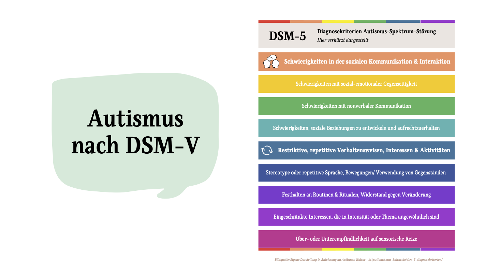
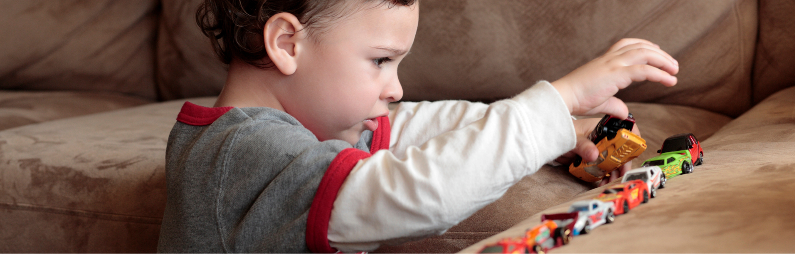
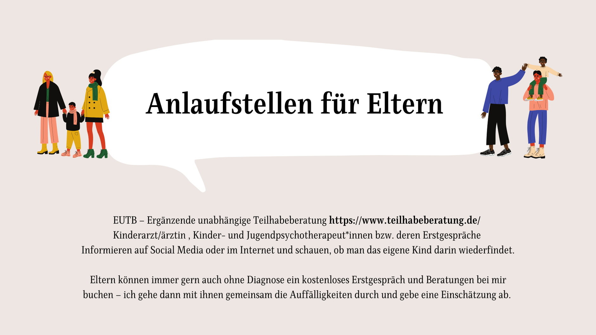

Du kennst das: Nach den Sommerferien geht's wieder los mit den Eingewöhnungen. Neue Kinder, neue Eltern, neue Dynamiken – und manchmal auch neue Konflikte. Die Wahrheit ist: Konflikte sind nicht das Problem. Dein Umgang damit entscheidet, ob ein Kind in der Kita ankommt – oder von Anfang an scheitert.
Autismus-Spektrum (WHO)
eine Regeleinrichtung
im Spektrum oft
Warum Konflikte unterschiedlich aussehen können
Viele Fachkräfte sehen Verhalten von Kindern – Schreien, Rückzug, Wutausbrüche – und interpretieren es vorschnell als „Ungehorsam" oder „Problem". Aber das ist Quatsch.
Verhalten ist nie zufällig. Es ist immer eine Reaktion auf die Situation: auf Überforderung, fehlende Strukturen, ungewohnte Abläufe oder zu viele Reize.
Jedes Kind bringt seine ganz eigenen Stärken, Bedürfnisse und Ausdrucksformen mit. Kinder im Autismus-Spektrum zeigen das oft sehr deutlich – und genau darin liegt die Chance: Vielfalt nicht nur zu akzeptieren, sondern aktiv zu gestalten.
Eingewöhnung = Dauerstress? Nur wenn du unvorbereitet bist
Wenn du die Eingewöhnung einfach so laufen lässt, wirst du schnell merken: Jedes Kind hat seine ganz eigene Art auf Neues zu reagieren. Manche brauchen Sicherheit durch klare Strukturen, andere durch viel Nähe und Wiederholung.
Gerade Kinder im Autismus-Spektrum zeigen dir sehr deutlich, was sie brauchen – das ist keine Schwäche, sondern ein Geschenk. Denn sie helfen dir, noch genauer hinzuschauen und dein pädagogisches Handeln bewusst zu gestalten.

Das DSM-5 beschreibt zwei Kernbereiche: Schwierigkeiten in der sozialen Kommunikation & Interaktion sowie repetitive, restriktive Verhaltensweisen. Beide Bereiche zeigen sich in der Eingewöhnung – und beide lassen sich mit gezielter Vorbereitung gut begleiten.
Konflikte sind Chancen – wenn du sie erkennst
Stell dir vor: Ein Kind weint, wenn die Mutter den Raum verlässt. Statt hektisch zu reagieren oder sofort zurückzurennen, frag dich:
→ Was will mir dieses Verhalten sagen?
→ Welche Struktur fehlt dem Kind gerade?
→ Wie kann ich Orientierung geben?
Konflikte sind Signale. Sie zeigen dir, wo ein Kind noch Halt braucht. Wenn du das erkennst, kannst du die Eingewöhnung zur Starthilfe für echtes Vertrauen und Selbstständigkeit machen – nicht nur überstehen.
| Situation | ❌ Unvorbereitet | ✅ Mit Fahrplan |
|---|---|---|
| Kind schreit beim Abschied | Hektisches Beruhigen, Mutter bleibt länger | Klares Abschiedsritual etabliert, Vertrauen aufgebaut |
| Kind zieht sich völlig zurück | „Das wird schon" – wird ignoriert | Ruhiger Rückzugsort angeboten, Kontakt nicht erzwungen |
| Routine-Änderung löst Ausbruch aus | Irritation beim Team, Kind gilt als „schwierig" | Vorab visuelle Ankündigung, Übergang erklärt |
| Überforderung durch Lärm/Reize | Kind wird in Gruppe gelassen | Reizsicherer Rückzugsraum, Reizpause eingeplant |
| Kommunikation funktioniert nicht | Viel Reden, Kind versteht nicht | Bildkarten, einfache Sprache, nonverbale Signale |
Praxis-Tipps: So begleitest du Kinder in Konflikten
Eingewöhnungen sind nie „Schema F". Die folgenden fünf Tipps helfen dir, auf individuelle Bedürfnisse einzugehen und Konflikte als Wegweiser zu nutzen:

Gute Vorbereitung ist alles
Sprich frühzeitig intensiv mit den Eltern: Welche Routinen kennt das Kind von zuhause? Welche Übergänge waren schwierig, welche haben gut geklappt? Je genauer du Bescheid weißt, desto individueller kannst du begleiten.
Strukturen schaffen Sicherheit
Klare Abläufe, wiederkehrende Rituale und visuelle Hilfen (z. B. Bildertafeln) geben vielen Kindern Halt – besonders wenn Neues auf sie zukommt. Strukturen reduzieren Konflikte, weil sie Orientierung bieten.
Gefühle in Worte fassen
Kinder zeigen dir durch ihr Verhalten, was sie fühlen – auch wenn sie es noch nicht in Worte packen können. Unterstütze sie ruhig und klar: „Du bist traurig. Mama geht, doch sie kommt wieder." Diese Sprachbrücken helfen, Gefühle zu verstehen und Konflikte zu entschärfen.
Konflikte ernst nehmen – nicht persönlich
Wenn ein Kind schreit, weint oder sich zurückzieht, bedeutet das nicht, dass du etwas falsch machst. Nimm den Konflikt ernst, aber trenne dich emotional: Es geht nicht um dich als Person, sondern um die Situation, die das Kind überfordert.
Kleine Schritte feiern
Manchmal bleibt ein Kind am ersten Tag nur fünf Minuten allein in der Gruppe – und das ist ein riesiger Erfolg. Erkenne diese Mini-Erfolge an. Sie sind die Grundlage für Vertrauen, Selbstständigkeit und gelingende Inklusion.
Was passiert, wenn du Konflikte ignorierst
Wenn du Konflikte nicht ernst nimmst, machst du dir das Leben leichter – aber du verbaust Kindern Chancen.
Ein Kind, das in der Eingewöhnung nicht verstanden wird, trägt diese Erfahrungen wie einen Stempel durch die gesamte Kita-Zeit. Klingt hart? Ist es auch. Aber genau deshalb bist du hier: um es besser zu machen.
Von der Herausforderung zur Professionalität
Die Realität: Kinder sind unterschiedlich. Sie bringen Vielfalt, verschiedene Kommunikationsformen und Bedürfnisse mit. Konflikte sind dabei keine Ausnahme, sondern Normalität.
Doch anstatt dich überfordert zu fühlen, kannst du diese Situationen nutzen, um zu wachsen – als Pädagog*in, als Mensch, als Team. Konflikte sind keine Hindernisse. Sie sind der direkte Weg zu mehr Inklusion, Resilienz und echter pädagogischer Qualität.

Du musst das nicht alleine stemmen
Vielleicht denkst du jetzt: „Ja toll, klingt logisch. Aber wie soll ich das alles im Alltag umsetzen?" Die Antwort ist: Mit Wissen, Austausch und praktischen Strategien.
Genau deshalb haben wir bei der EDULEO Akademie zwei Fortbildungsformate entwickelt, die dich fit für Vielfalt, Autismus und ADHS im Kita-Alltag machen:
- Online-Tagesfortbildung „Autismus in der Kita" — Kompakt, praxisnah und sofort anwendbar. Perfekt, wenn du schnell neue Impulse brauchst.
- 3-Monats-Fortbildung „Expert*in für ADHS und Autismus in der Kita" — Hier gehst du in die Tiefe: Kinder langfristig begleiten, Team schulen, Eltern professionell beraten.
Und das Beste: Du lernst von echten Expertinnen aus der Praxis:
Spezialisiert auf Autismus im Kita-Alltag – bringt Klarheit in komplexe Situationen.
Erfahrene Dozentin für ADHS & Verhaltensauffälligkeiten – praxiserprobte Strategien.
Expertin für inklusive Pädagogik – zeigt, wie Inklusion im Alltag wirklich gelingt.